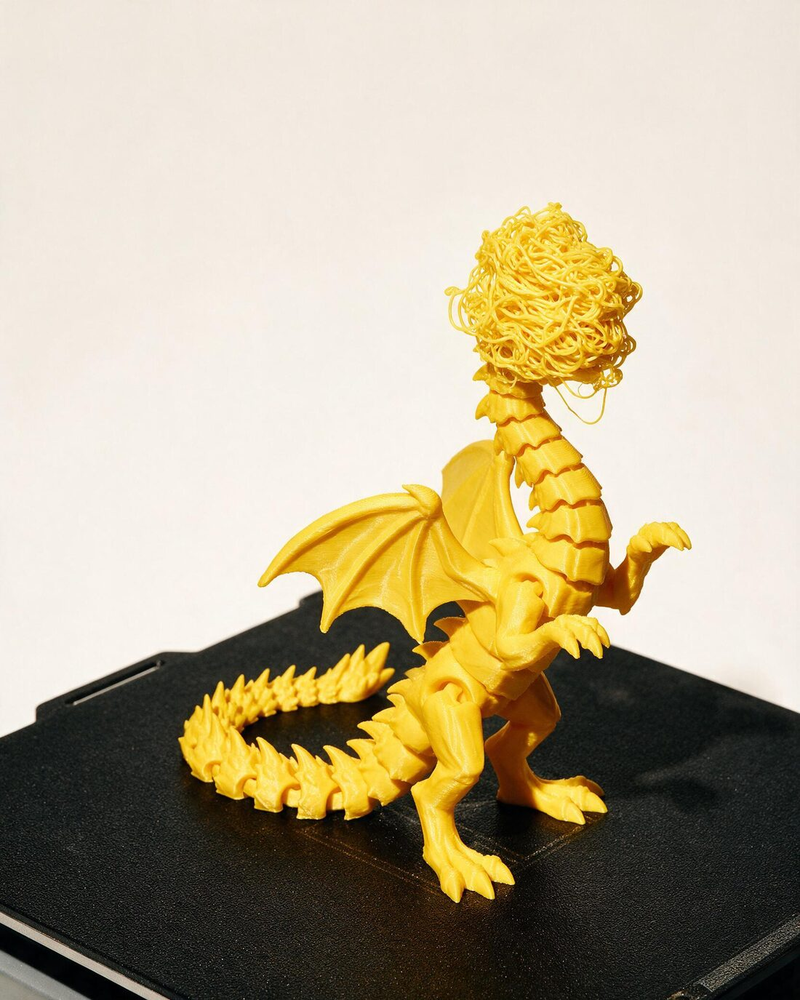
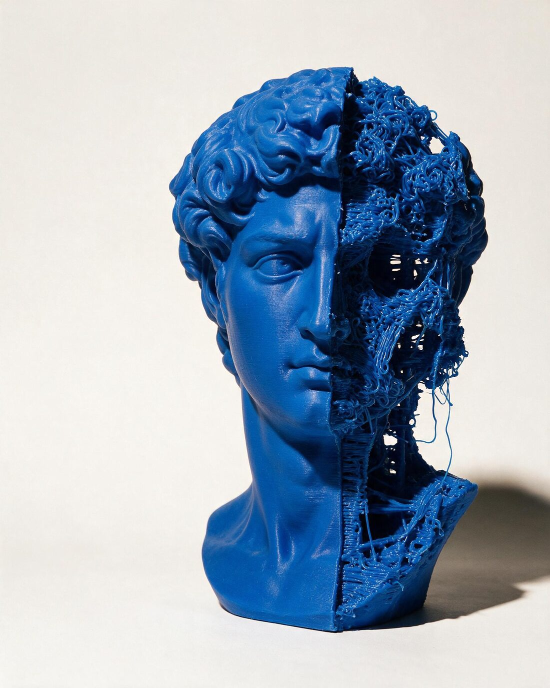
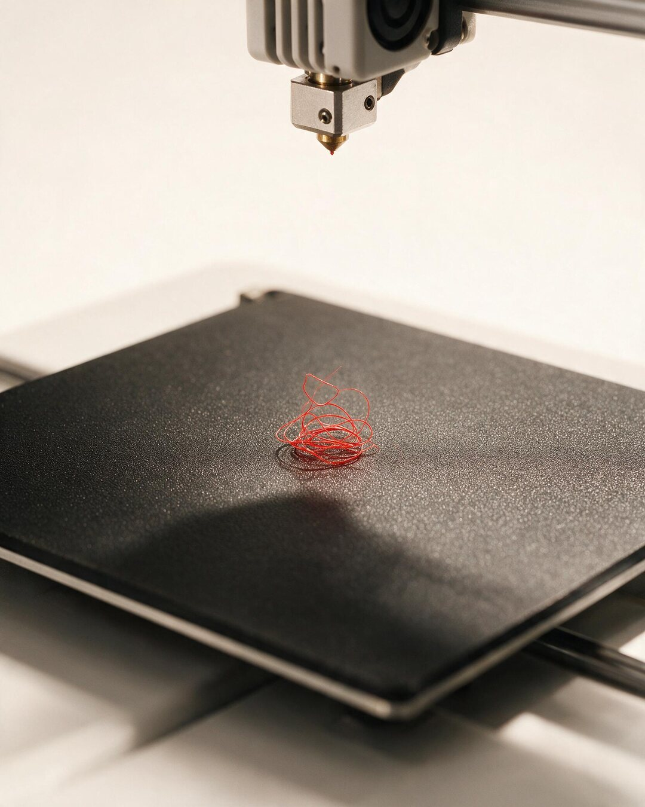
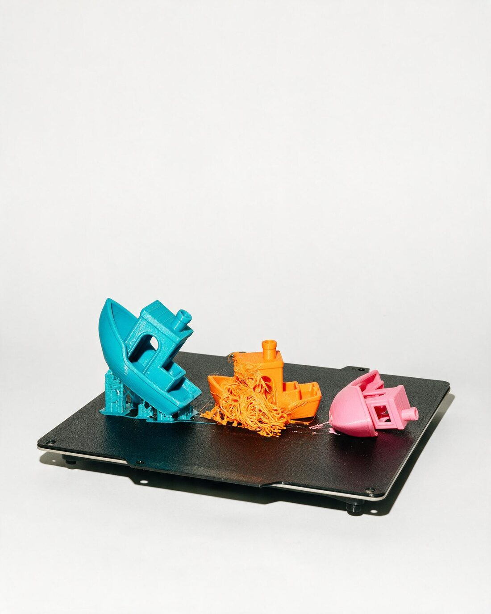

The campaign formula as a reusable component: one failed print, one deadpan line, fix3d.co.
Nothing else. Same type, colour and crop rules as the site, so the ads and the landing page read as one world.
Masters are 4:5, which is why fd (1080×1350) is the native ratio and the strongest feed placement.
To export: open this file, DevTools → device toolbar, screenshot each .ad node at 1:1
(or point a headless screenshot tool at it). To make a new ad: copy a frame, swap the
<img>, edit the .line. Use ad-overlay for dark candid photos and
ad-block for studio shots on white.
AD-01 · 1080×1350 · feed · launch ad
Print happens

This was supposed to be a dragon.
fix3d.co
AD-02 · 1080×1350 · feed
AD-03 · 1080×1350 · feed
Print happens

We’ve seen worse.
fix3d.co
AD-04 · 1080×1350 · feed
Print happens

Nothing comes out.
fix3d.co
AD-05 · 1080×1350 · feed
AD-06 · 1080×1080 · feed
Print happens

The boat has sunk.
fix3d.co
AD-07 · 1080×1920 · stories / reels